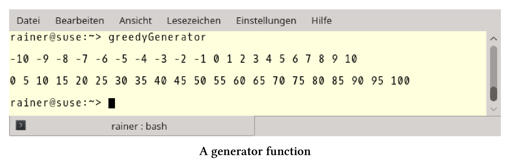

协程
协程是可以挂起，保持函数执行状态，并可以在之后继续执行的方式。这种方式的演化在C++中算是一种进步，协程大概率是C++20标准的一部分。
本节中介绍的C++20中的新思想，其实已经已经相当古老了。“coroutine”这个词是由Melvin Conway创造的，他在1963年关于编译器的出版物中使用了这个词。Donald Knuth称程序是协程的一个特例。有时候，有些想法需要一段时间才能被世人接受。
C++20用两个新的关键字co_await和co_yield，扩展了C++函数的执行。
co_await可以挂起表达式，如果在函数func中使用co_await，当调用auto getResult = func()不阻塞时，函数的结果不可用。不是资源消耗式的阻塞，而是资源友好式的等待。
co_yield允许编写一个生成器，生成器每次返回一个新值。生成器是一种数据流，并可以从中选择相应的值。数据流可以是无限的，这样我们就可以使用C++进行惰性求值了。
生成器
下面的程序不太难，函数getNumbers返回所有的整数，从开始到结束递增为inc。begin必须小于end，且inc必须是正数。
贪婪生成器
// greedyGenerator.cpp
#include <iostream>
#include <vector>
std::vector<int> getNumbers(int begin, int end, int inc = 1) {
std::vector<int> numbers;
for (int i = begin; i < end; i += inc) {
numbers.push_back(i);
}
return numbers;
}
int main() {
std::cout << std::endl;
const auto numbers = getNumbers(-10, 11);
for (auto n : numbers) std::cout << n << " ";
std::cout << "\n\n";
for (auto n : getNumbers(0, 101, 5)) std::cout << n << " ";
std::cout << "\n\n";
}
当然，这里用getNumbers重新发明轮子了，自从C++11以来，这项工作可以使用std::iota来完成。
下面是输出：

对这个程序的两个观察结果比较重要：一方面，即使我只对一个有1000个元素的vector的前5个元素感兴趣，第8行的vector也会存放这1000个值。另一方面，很容易将函数getNumbers转换为惰性生成器。
惰性生成器
// lazyGenerator.cpp
#include <iostream>
#include <vector>
generator<int> generatorForNumbers(int begin, int end, int inc = 1) {
for (int i = begin; i < end; i += inc) {
co_yield i;
}
}
int main() {
std::cout << std::endl;
const auto numbers = generatorForNumbers(-10);
for (int i = 1; i <= 20; ++i) std::cout << numbers << " ";
std::cout << "\n\n";
for (auto n : generatorForNumbers(0, 5)) std::cout << n << " ";
std::cout << "\n\n";
}
当greedyGenerator.cpp中的函数getNumbers返回std::vector<int>时，lazyGenerator.cpp中的协程generatorForNumbers返回生成器。第18行中的生成器编号或第24行的generatorForNumbers(0,5)在请求时，会返回一个新编号，并基于for循环触发查询。更准确地说，协程的查询通过co_yield i返回值i，并立即暂停执行。如果请求一个新值，协程将在该位置恢复执行。
第24行中的generatorForNumbers(0,5)是生成器的直接使用的一种方式。
我想强调一点，协程generatorForNumbers会创建无限的数据流，因为第8行中的for循环没有结束条件。如果值的数量有限(第20行)是可以的，但因为没有结束条件，第24行不会停下来，而会一直运行。
因为协程是C++添加的一个新概念，所以我想聊一聊它的细节。
其他细节
典型用例
协程是编写事件驱动应用的常用方法，可以是模拟、游戏、服务器、用户界面，甚至是算法。协同程序通常用于协作的多任务处理，协作式的多任务处理的关键是，每个任务需要多少时间就花多少时间。这与抢占式的多任务形成了对比，我们可以有计划的决定每个任务占用CPU的时间。
协程还有很多种。
基础概念
C++20中的协程是不对称的、优秀的、无堆栈的。
非对称协程的工作流，会返回给调用者，这并不适用于对称协程。对称协同程序，可以将其工作流委托给另一个协同程序。
优秀的协程类似于优秀的函数，因为协序的行为类似于数据。这意味着可以将它们作为函数的参数或返回值，将它们存储在变量中。
无堆栈协程使其能够挂起，并恢复上级协同程序，但此协程不能调用另一个协程。所以，无堆栈协程通常称为可恢复函数。
设计目的
Gor Nishanov描述了协同程序的设计目的：
协程应该具有的能力：
- 高度可扩展性(可到数十亿并发协程)。
- 具有高效的恢复和挂起，其成本不高于函数的开销。
- 与现有特性进行无缝，无开销交互。
- 具有开放的协同程序机制，允许库设计人员开发使用各种高级语义(如生成器、goroutines、任务等)。
由于可扩展性和与现有设施的无缝交互的设计理念，所以协同程序是无堆栈的。相反，对于堆栈式协程，在Windows上会保留默认堆栈为1MB，在Linux上会保留默认堆栈为2MB。
将函数变成协程有四种方式。
成为协程
函数使用了协程，就变成了协程：
- co_return
- co_await
- co_yield
- co_await基于for循环的表达式。
这个解释源自提案N4628。
最后，讨论下新的关键字co_return、co_yield和co_await。
co_return , co_yield和co_await
co_return：协程使用co_return作为其返回语句。
co_yield：可以实现一个生成器。这意味着可以创建一个生成器，并生成一个无限的数据流，可以连续地查询值。生成器generator<int> generatorForNumbers(int begin, int inc= 1)的返回类型是generator<int>。generator<int>内部包含一个特殊的promise p，这样调用co_yield i就等于调用co_await p.yield_value(i)。co_yield i可以调用任意次。调用之后，协程立即暂停。
co_await：会让协程挂起，并在之后恢复。co_await exp中的exp必须是可等待的表达式。exp必须实现一个特定的接口，这个接口由await_ready、await_suspend和wait_resume三个函数组成。
co_await的典型用例是事件等待服务器。
阻塞式服务器
Acceptor acceptor{443};
while (true){
Socket socket= acceptor.accept(); // blocking
auto request= socket.read(); // blocking
auto response= handleRequest(request);
socket.write(response); // blocking
}
这个服务器非常简单，因为会在同一个线程中依次响应每个请求。服务器监听端口443(第1行)，接受连接(第3行)，读取来自客户机的数据(第4行)，并将应答信息传回客户机(第6行)。第3、4和6行中的所有调用都被阻塞。
由于co_await，阻塞调用现在可以暂停并恢复。
等待式服务器
Acceptor acceptor{443};
while (true){
Socket socket= co_await acceptor.accept();
auto request= co_await socket.read();
auto response= handleRequest(request);
co_await socket.write(response);
}